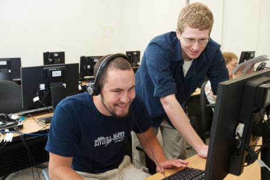

STONEHILL COLLEGE
COMPUTER SCIENCE
| CS Homepage |
| CS Major |
| CS Minor |
| Computer Engineering |
| CS Courses |
| Fall Courses |
| Spring Courses |
| Faculty |
| FAQ |
| ACM Student Chapter |
| Stanger Lab |
| Internships |
| NSF Java Workshop |
Stonehill College 320 Washington Street North Easton, MA 02357 |
 |
|
"My experience as a computer science major at Stonehill has been excellent. My computer science professors pushed me to do more than I thought I could, and then asked me to do twice that." |
What It Means to be a Computer Science Major
Computer science is a discipline that involves the understanding and design of computers and computational processes. Particular interest is placed on making processes efficient and endowing them with some form of intelligence. The discipline ranges from theoretical studies of algorithms to practical problems of implementation in terms of computational hardware and software....In computer science there is an inherent intermingling of the theoretical concepts of computability and algorithmic efficiency with the modern practical advancements in electronics that continue to stimulate advances in the discipline. It is this close interaction of the theoretical and design aspects of the field that binds them together into a single discipline.
-from Webster's New World Computing Dictionary
Computer Science at Stonehill College
Rugg's Recommendation on the Colleges places Stonehill's computer science major in a select group of fewer than 100 "very selective" high-quality computer science programs nationwide.
Here, we have two definitions of computer science: one somewhat technical, the other quite simple. Nonetheless, both emphasize theoretical foundations coupled with hardware and software design. The curriculum at Stonehill reflects this blend of theory and practice. At Stonehill, computer science courses fall roughly into three overlapping categories: computer theory, computer architecture (hardware), and computer software.
Courses in computer theory provide the foundation for tomorrow's technology. Under the rubric of theory, students study theoretical topics like " computability," "finite state machines," and "graph theory" as well as the design and analysis of algorithms.
The architecture sequence consists of several courses which explore the computer "under the hood." In one such course, students design their own small computers using a bit of mathematical theory. Architecture courses allow students to understand computer hardware from both the engineer's and the programmer's point of view.
The software component of the curriculum begins with elementary computer programming and progresses to more advanced topics like database management systems, artificial intelligence, and operating systems. In the final capstone course, seniors, working in teams, develop large software systems using the principles of software engineering.
Through problem solving and lab work, computer science majors develop an understanding of each of these subject areas as well as the strong relationships among them. This balanced mix of theory and application, provides graduates with the requisite background for both entry into the computer profession and further graduate study in computer science.
|  |
Students Create Software Program to Benefit Local School for the BlindStudents from the Perkins School for the Blind in Watertown are more independent thanks to a new fully accessible time tracking system designed and implemented by Stonehill students. Last semester, seven computer science majors along with two interdisciplinary studies majors concentrating in technology, worked on the project as part of their Senior Capstone. From coding the program to writing a 220 page user manual, the students developed every aspect of the project which allows Perkins’ students to record their work and volunteer hours electronically. Over the summer, Matt Plummer ’15 worked closely with Perkins on implementing the program, a tough but rewarding and practical learning experience. For more, visit here. |
Stonehill Alumni Are Thriving on the Frontier of the Internet EconomyJen Burge ’04 is used to the Mark Zuckerberg question. A software engineer at Facebook for the past five years, it seems everyone who hears where she works wants to know if she’s met the 30-year-old billionaire and Facebook founder. “I see him around campus occasionally,” she usually replies, referring to the social media company’s sprawling California headquarters. Being at a high-profile company where the boss is famous might be what intrigues others but for Jen the thrill comes from being able to apply her computer science skills in a way that helps the stars in her own life. “My favorite thing about my job is getting to work on a product my friends and family use every day,” Jen says. “I enjoy knowing that the stuff I do helps so many people stay connected with the people they care about.” Read More |
Students Create Interactive Mobile Touring AppAs it looked for new ways of reaching prospective students, the Enrollment Management and Marketing Division approached computer science majors Ryan Curtis ‘10 and Scott Markoski ‘10 for ideas. The end result was Gaido, a one-of-a-kind touring application smart phone owners can utilize for unique, interactive experiences. Read More |
|

Stonehill computer science team takes first place at CCSNE programming competition. Read more
Read the article about the CS Department in the Alumni Magazine
Read the article about the CS Major and chess champion Jesse Suero in the Alumni Magazine
Stonehill Senior Wins National Science Foundation Graduate Research Fellowship
From more than 9000 applicants, the National Science Foundation recently awarded 1021 graduate research fellowships, including 77 including in computer science. Read more
Stonehill Receives Clare Boothe Luce Grant for CS Scholarships
The The Henry Luce Foundation recently awarded Stonehill College a grant of $101,224 designated for computer science scholarships. This grant, which is part of the Clare Boothe Luce Program, will fund for two undergraduate scholarships for highly qualified female students who are computer science majors. Stonehill is one of only eighteen colleges and universities selected by the Clare Boothe Luce Program for awards in 2001. Read more
Stonehill Professors receive 158K grant from the National Science Foundation
Professors Ralph Bravaco and Shai Simonson, both of the Department of Computer Science, have received notification from the National Science Foundation that their Teacher Enhancement proposal, Java and Object Oriented Design: Professional Development for Secondary School Computer Science Teachers, has received funding. The grant of $158,368 will provide a series of workshops for secondary school teachers of computer science over a two-year period. The topic of the workshops will be Java and Object Oriented Programming. In addition to serving a core group of twenty-five local high school teachers, the project will feature a regional conference and the development and dissemination of instructional materials. Read more about this program
Validate Page by Clicking on this image: